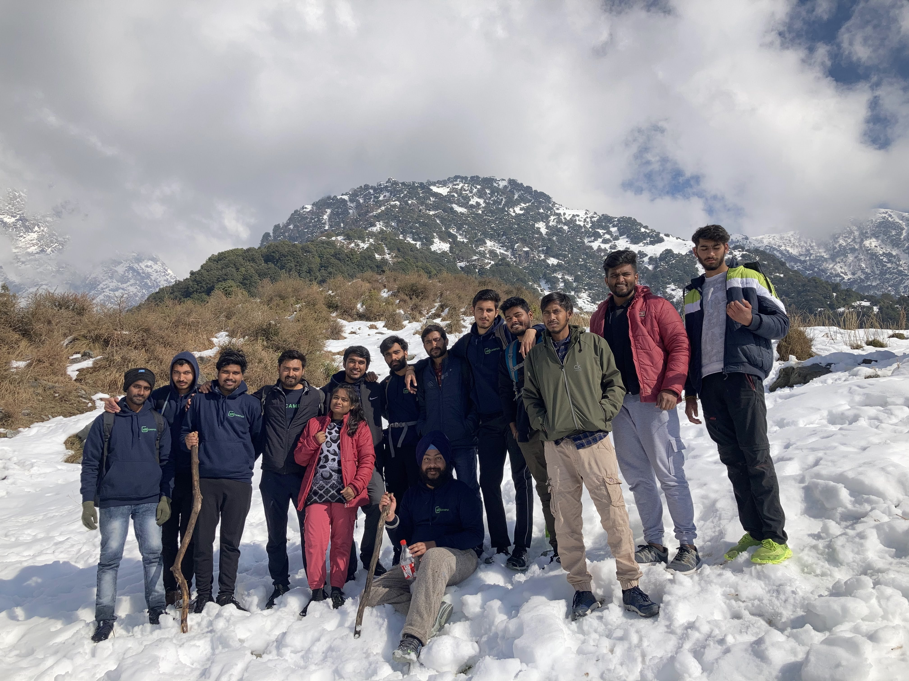

At the 14 / 01 /2022 I went to trekking. He was my first trekking. I was very excited on my first trek. My friends and i were went together. Our trekking stated at 7:30 A.M . This trek was 11km from my hostel. first by cab we and our friends reached on that point where the trek was start. at 7:30 A.M our trekking was started and after 4 hours we and our friends reached at the final point. The trek name was Mathala Treak. After reaching there we saw the snow. we were very excite to see the snow first time. we enjoyed a lot and we clicked the images. we were all throwing the snow to eachother and after that we ate Maggi and drink tea. At 1:30 p.m we left that place. We reached at 6 p.m at our hostel. This trek was amazing .We enjoyed a lot and always rememberd this trek.